Por que contar histórias com dados?
Oi, eu sou a Ana
Sou Estrategista de AI da kunumi
3 aulas de 2h30 + um workshop bônus
- 2h30Aula 1: Por que contar histórias com dados?
por que humanos gostam tanto de histórias e o que significa contar uma história em um contexto técnico e científico. Exemplos e dicas de como considerar a audiência e os seus objetivos na hora de planejar uma história. - 2h30Aula 2: Visualizações de dados que falam por si
qual o melhor tipo de gráfico? Posso usar gráficos de pizza? Dicas práticas de design para quem mal consegue segurar um lápis. - 2h30Aula 3: E agora, o que eu faço com tudo isso?
um novo mundo se abriu e agora a gente descobriu possibilidades e preocupações que nem tínhamos antes. É hora de respirar fundo e convergir. Como seguir expandindo nossa criatividade sem ficar congelados pelas opções? - 2hWorkshop: Criando o alfabeto visual das visualizações de dados da Kunumi
mão na massa transdisciplinar para dataviz nerds de todas as áreas.
Hoje nós vamos falar sobre contar histórias
O herdeiro do trono tem seu pai assassinado
Ele jura vingança contra o tio, o assassino, partindo em uma jornada conturbada de amor, ódio e decepção.
Qual é mais confiável?
Qual é a melhor?
Por que contar histórias?
Histórias são a forma como o nosso cérebro funciona
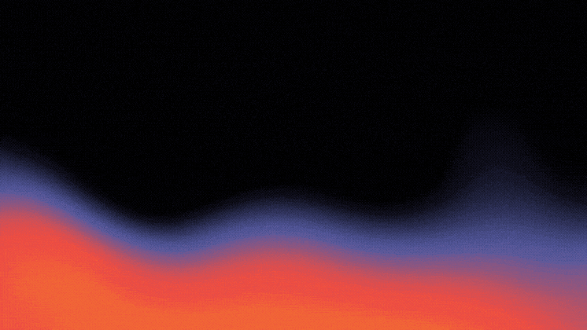
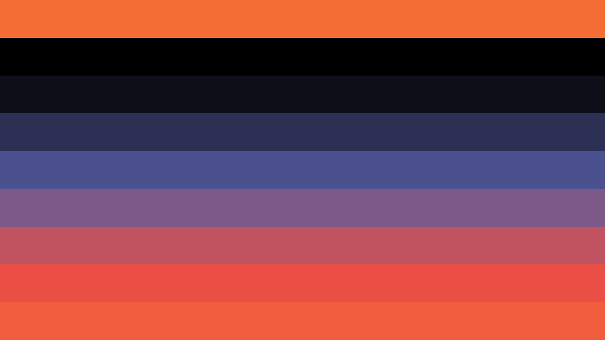
ideias abstratas e complexas
conceitos memoráveis e compreensíveis
Contar histórias é uma ferramenta efetiva para engajar o cérebro em confiar, entender e memorizar conteúdo
Quando contamos uma história, levamos nossa audiência por um trajeto de raciocínio, para que ela conheça algo que nós já conhecemos.
Para quem estou dando carona ou planejando um passeio?
Por que motivos vamos juntos e não separados? Ou em outros grupos?
De onde partimos? Para onde vamos? Quais as paradas obrigatórias?
Qual trajeto vamos seguir? O mais bonito? O mais rápido?
Qual nosso meio de transporte?
Para quem estou contando essa história?
Por que eu quero que ela saiba isso e por que ela está me dando atenção?
Quais as mensagens mais importantes da minha história?
Qual narrativa e quais elementos vou usar para passar essas mensagens?
Qual meio ou produto vou usar para contar a história?
Por que contar histórias com dados?
Dados mentem quando...
- ...não sabemos a sua origem. →
- ...agregamos eles inadequadamente. →
- ...não contam toda a história. →
Nem todo mundo é proficiente em dados
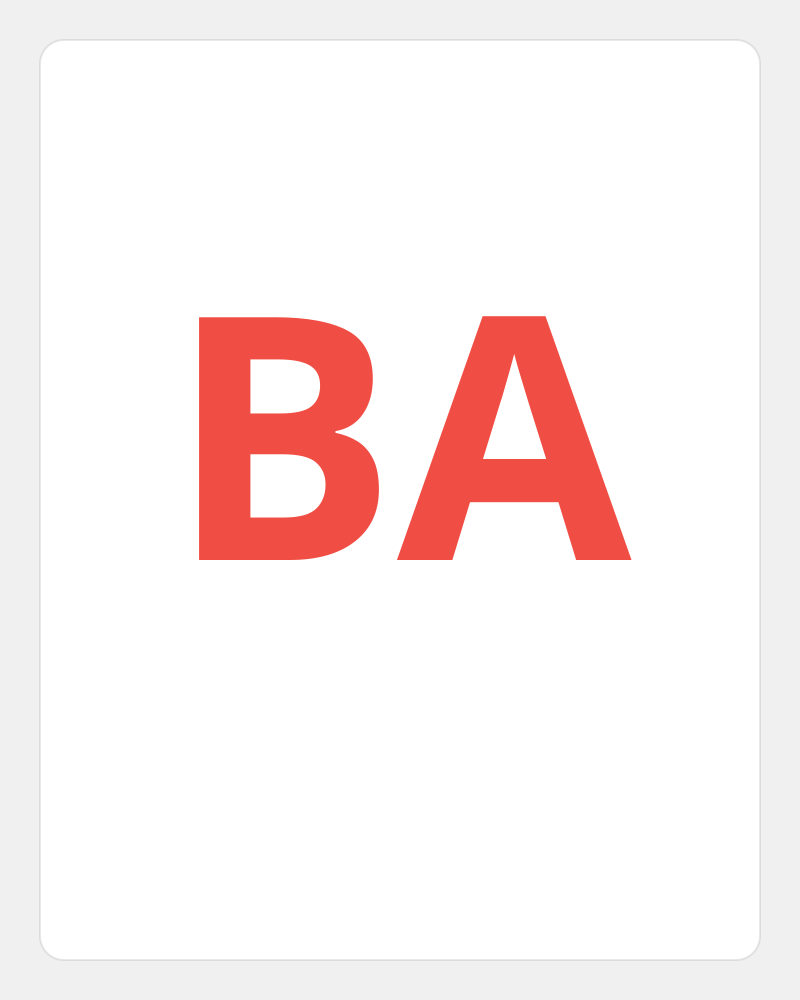
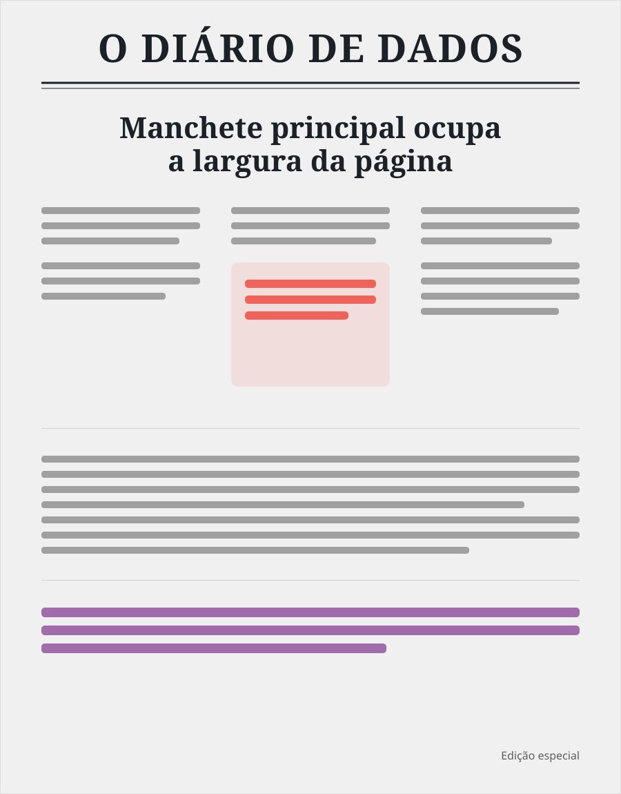
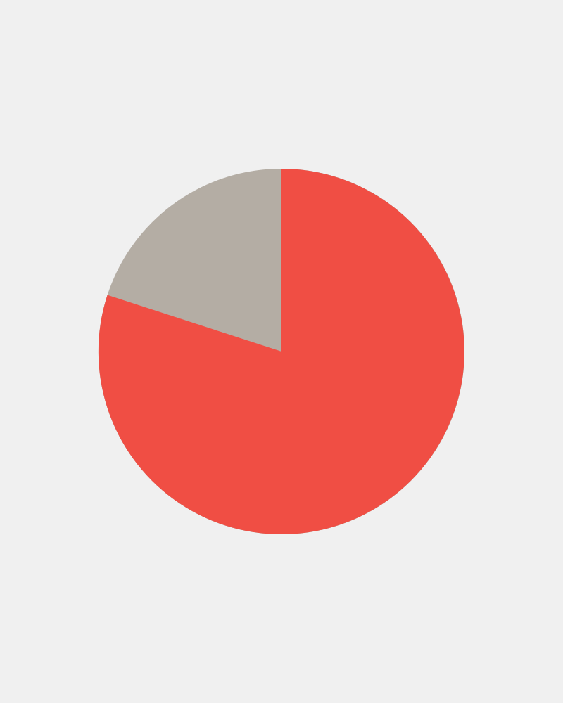
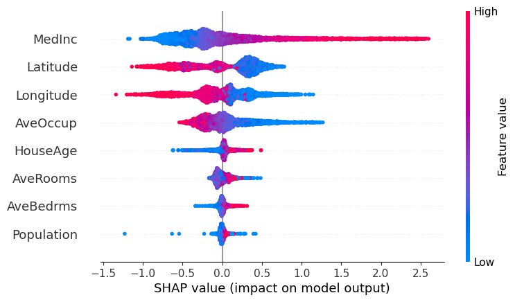
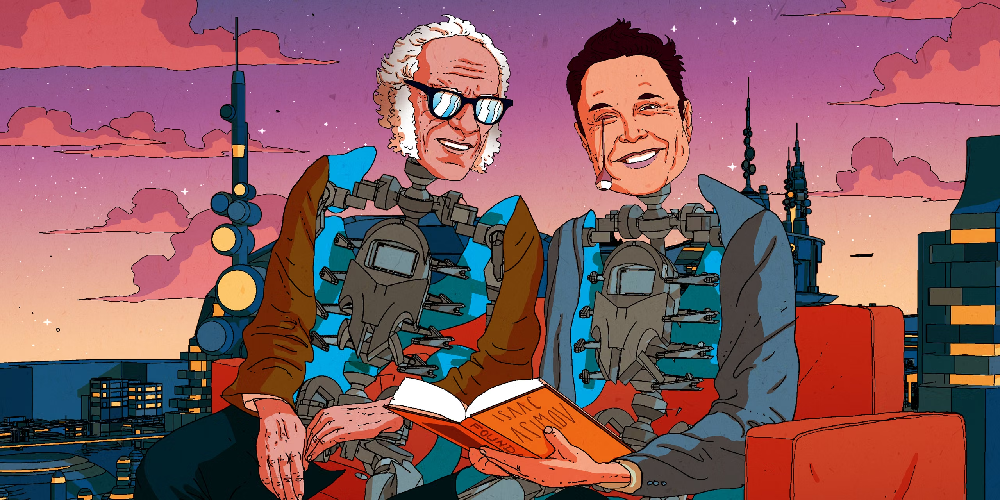
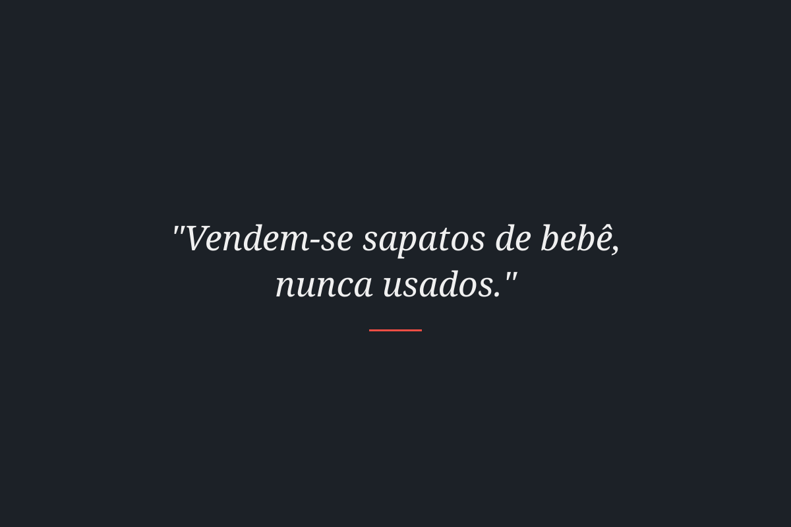
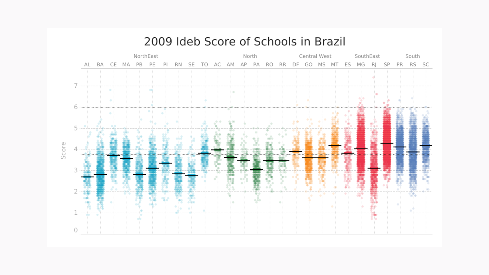
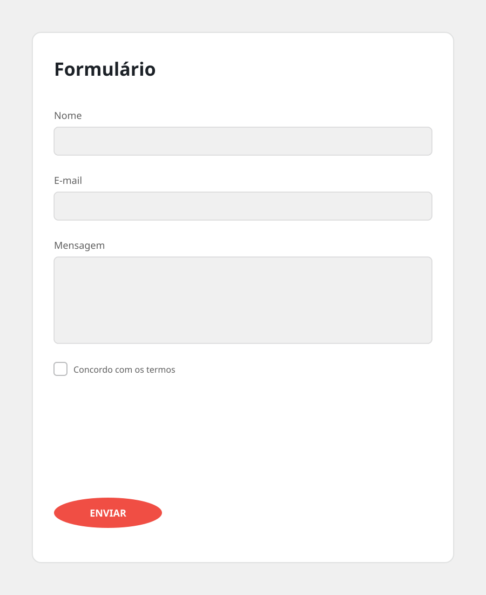
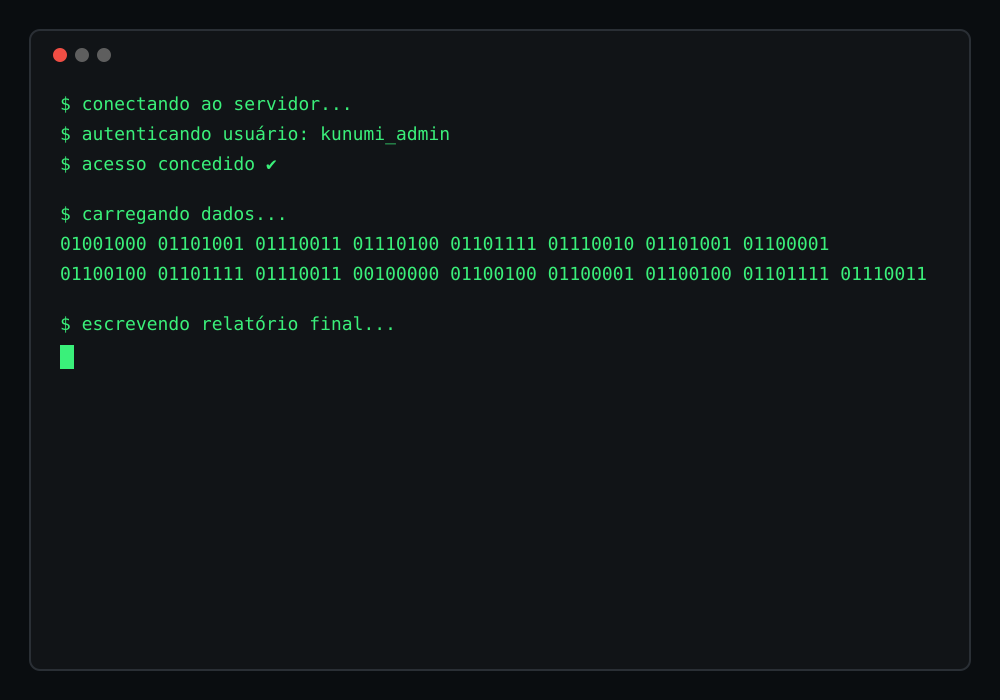
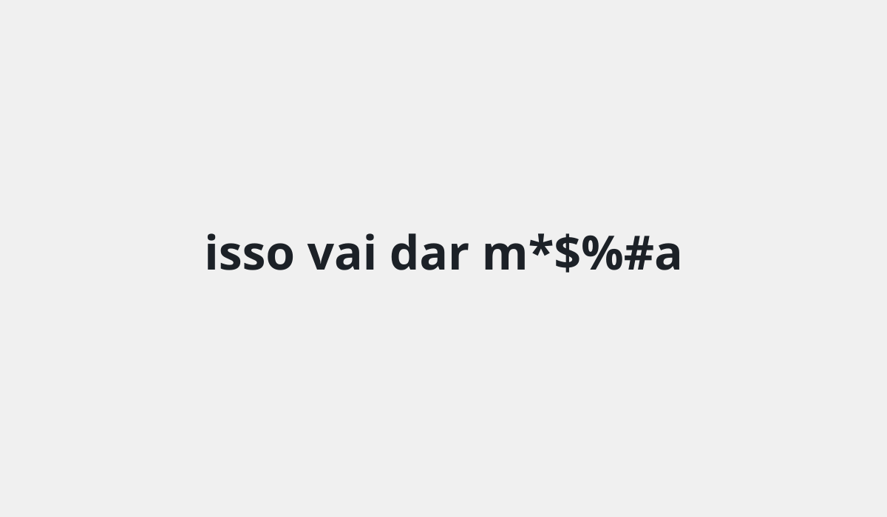
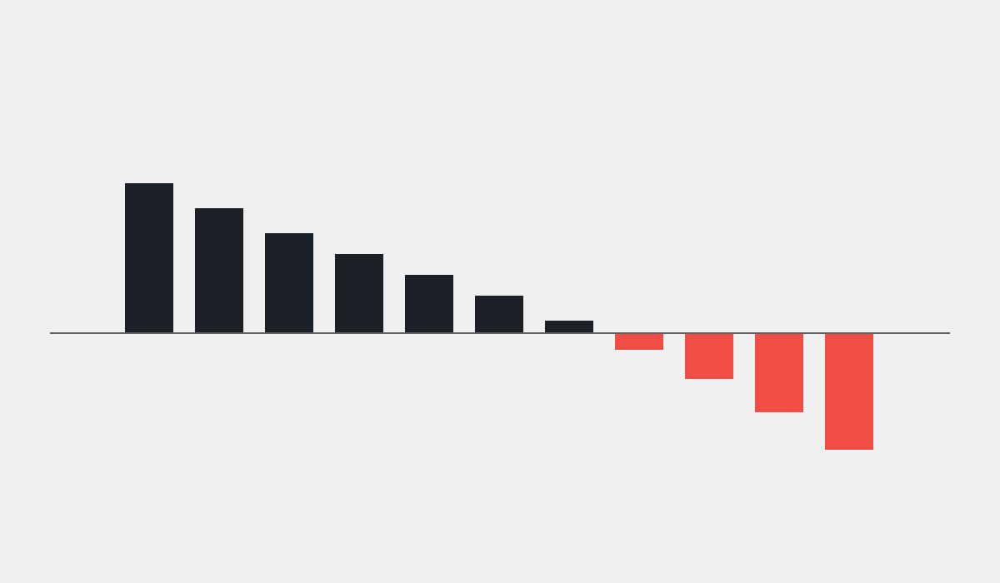
Para quem estou contando essa história?
Por que eu quero que ela saiba isso e por que ela está me dando atenção?
Quais as mensagens mais importantes da minha história?
Qual narrativa e quais elementos vou usar para passar essas mensagens?
Qual meio ou produto vou usar para contar a história?
1. Para quem?
Qual o nível de conhecimento da audiência sobre o assunto?
Quais as opiniões e experiências dessa pessoa?
De que maneiras essa pessoa está acostumada a consumir informação?
Com que tipo de linguagem essa pessoa está familiarizada?
Que ações ela deve tomar depois de acompanhar sua história?
O que muda na vida da pessoa depois da sua história?
2. Por quê?
Fazer a audiência entender as nuances da situação.
Causar emoções na audiência para engajar.
Apresentar resultados para melhores decisões.
Disponibilizar dados para a audiência tirar as próprias conclusões.
Eu quero que a audiência entenda as nuances da situação
- Quanto contexto eu preciso dar para a audiência?
- Eles já têm uma opinião que precisa ser revisada?
- Quanto tempo eles têm para se comprometer com o material?
Eu quero causar emoções na audiência para engajar
- Que sentimentos eu quero causar?
- Que informação chave vai causar o tipo de comoção que eu busco?
- A história pode ser mal interpretada? Como?
Eu quero apresentar resultados para que a audiência tome melhores decisões
- Eu tenho a confiança da minha audiência de que estou fornecendo resultados confiáveis?
- Quanto tempo eles têm para consumir a informação?
- Que decisões ou ações a audiência tomará a partir dos dados?
Eu quero disponibilizar dados para que a audiência tire as próprias conclusões
- A audiência tem conhecimento para explorar sozinha os dados?
- Eles têm tempo na sua rotina para o processo de exploração?
- Eles entendem o contexto do problema? É possível que cheguem a conclusões erradas?
3. O quê?
Dica! Isca + Final + Método
Isca
O que pode atrair a atenção da audiência logo no começo?
Analogia
Para quem estou dando carona ou planejando um passeio?
Por que motivos vamos juntos e não separados? Ou em outros grupos?
De onde partimos? Para onde vamos? Quais as paradas obrigatórias?
Qual trajeto vamos seguir? O mais bonito? O mais rápido?
Qual nosso meio de transporte?
Exemplo ou estudo de caso
Comece explorando um exemplo ou um caso, explicando a relação com o tema.
Resumo ou exposição do problema
Conte de forma resumida a mensagem principal, ou exponha a grandeza do problema logo de cara.
Função ou decisão
Convide o usuário a tomar uma decisão ou forneça uma função para ele usar. O resultado vai ser o começo da sua história.